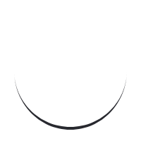

<div class="container-fluid" ng-init="getApod()">
    <div class="loading-container" ng-if="loading">
        
    </div>

    <div class="apod-container" ng-if="displayApod && !loading">
        <div class="apod">
            
            <p class="title">{{apod.title}}</p>
        </div>
        <input type="number" ng-model="imagesCount" min="1" max="30">
        <button type="submit" ng-click="getApods()" class="btn">Wyświetl</button>
    </div>

    <div class="images-container" ng-if="!displayApod">
        <div class="image" ng-repeat="image in images track by $index" ng-if="image.media_type === 'image'">
            
            <p class="title">{{image.title}}</p>
        </div>
    </div>
</div>
